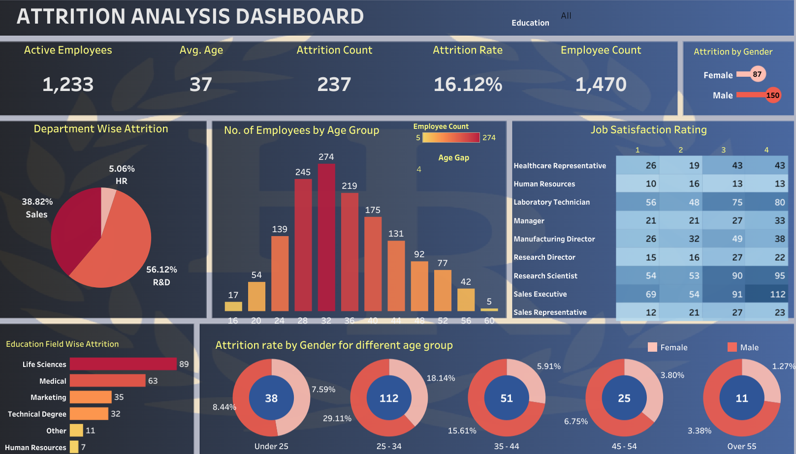
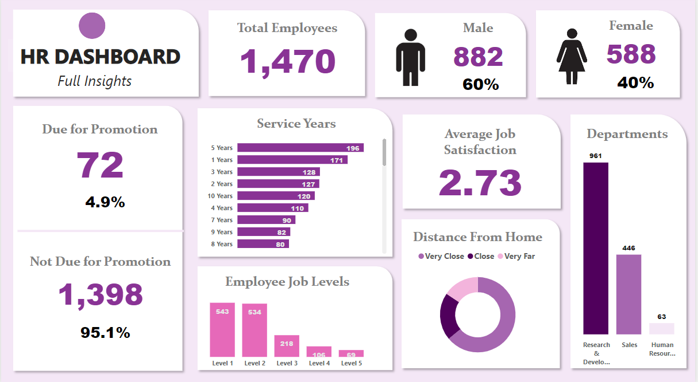

This project demonstrates a comprehensive data cleaning and exploration of housing data using SQL.
The project begins with data assessment to identify anomalies and inconsistencies.
SQL queries are then used to clean the data, including removing duplicates, filling in missing values, and to explore patterns and relationships within the data, such as the impact of location, number of bedrooms, and other variables on property value and rental rates. Advanced SQL functions, such as window functions and subqueries,
are employed to gain deeper insights into the data. Overall, this project showcases a strong proficiency in SQL and data analysis, providing valuable insights for anyone involved in the housing industry.


This project showcases a thorough data cleaning and exploration of COVID-19 data using SQL.
The analysis includes identifying and addressing inconsistencies, exploring patterns and trends within the data, and utilizing advanced SQL functions.
The project focuses on the impact of age, gender, and underlying conditions on COVID-19 mortality rates. The insights gained can inform policy decisions and interventions aimed
at reducing the impact of the pandemic. Overall, this project highlights strong proficiency in SQL and data analysis, providing valuable insights into the COVID-19 pandemic for anyone involved in public health or policy.

A collection of Tableau dashboards highlighting data visualization skills. The dashboards provide a visually appealing and interactive way to present complex data,
allowing users to easily explore and understand trends and patterns. The dashboards cover a wide range of topics, including sales, marketing, financial analysis, and Netflix analytics.
The design and layout of the dashboards are carefully crafted to emphasize key insights and provide a seamless user experience.
This project showcases a comprehensive data analytics analysis of student education based on a variety of factors using R Language. The analysis includes exploratory data analysis, predictive modeling, and statistical analysis to gain insights into student performance and behavior based on their schooling type, background, and financial situations. The project identifies key factors that impact student success and provides actionable recommendations for interventions aimed at improving student outcomes.
This project highlights a strong proficiency in data analytics and the ability to leverage R to inform policy decisions aimed at improving student success and educational equity.

The design and layout of the POWER BI dashboard is carefully crafted to provide an intuitive user experience, allowing stakeholders to easily access and interpret data insights.
The project demonstrates a strong understanding of Power BI functionality and data visualization best practices, providing valuable insights for HR decision-making and workforce planning.
It highlights a proficiency in HR data analytics and the ability to leverage Power BI to provide actionable information for HR stakeholders.

This project showcases a comprehensive sales trend dashboard using Power BI.
The dashboard provides an interactive way to track and analyze sales data, including revenue, profit, and sales volume.
The design and layout of the dashboard is carefully crafted to provide an intuitive user experience, allowing stakeholders to easily access and interpret data insights. The project demonstrates an understanding of Power BI functionality and data visualization best practices, providing valuable insights for sales decision-making and forecasting.
This project showcases a Excel dashboard highlighting bike sales trends. The dashboards provide a visually appealing and interactive way to present bike sales data,
allowing users to easily explore and understand trends and patterns.
The design and layout of the dashboards is carefully crafted to emphasize key insights and provide a seamless user experience. This project demonstrates a strong proficiency in Excel and data visualization techniques, providing valuable insights and actionable information for decision-making in the bike sales industry.